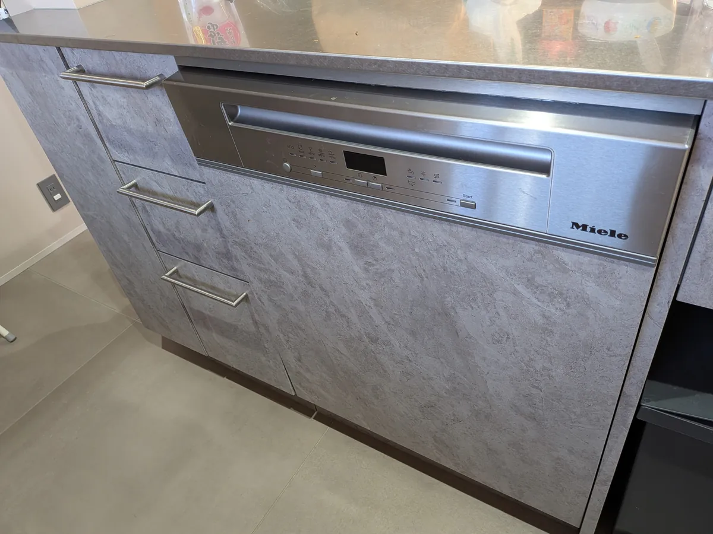
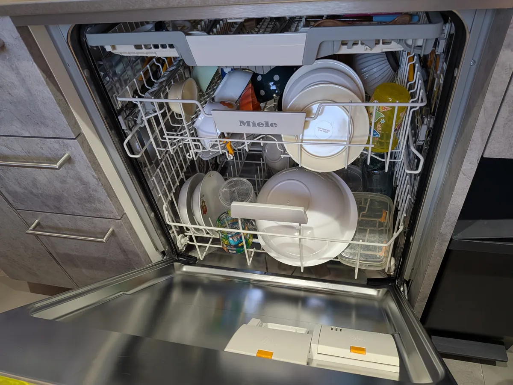
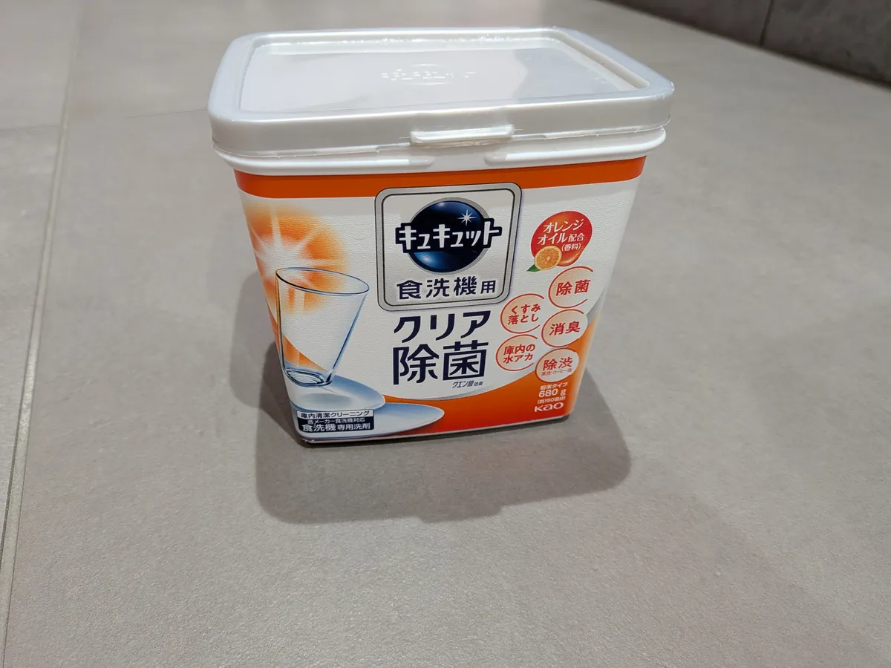
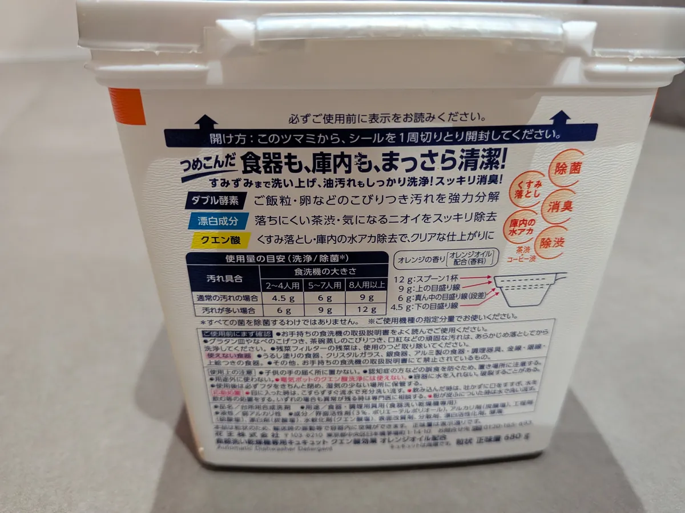

※本記事にはプロモーション（PR）が含まれています。
ミーレの食洗機を4人家族で4年使ったリアルなレビュー｜洗剤は専用品じゃなくてキュキュットで十分でした
40代夫婦と6歳・2歳の子どもの4人家族で、ミーレの食洗機を4年使っています。高い買い物なので「本当に元が取れるの？」「ランニングコストは？」と気になっている方に向けて、毎日使っているリアルを、いいところも気になるところも正直に書きます。

ミーレを選んだ理由は「大きさと容量」
決め手は、なんといっても大きさと容量です。家族4人分の食器はもちろん、大きな鍋までそのまま入れられます。わが家の機種は「G 5214 C SCi」です。

4人家族の1日の使い方
基本は夕食後に1回まとめて回しています。朝や昼に洗い物が多かった日は、1日2回回すこともあります。

子育て中の洗い物がどう変わったか
子どもが2人いると、プラスチックのコップやお弁当箱など細かい洗い物がとにかく多くなります。それを手で洗わなくていいだけで、本当にラクになりました。手荒れもなくなった気がします。
ちなみにわが家では、水道水でサッと予洗いしてから食洗機に入れています。理由は後の「気になるところ」で書きますね。
洗剤はミーレ専用ではなくキュキュットにしています

ミーレには専用の洗剤がありますが、うちでは使っていません。キュキュットの食洗機用洗剤にしている理由は4つです。
- スーパーやドラッグストアで手に入りやすい
- 値段が安い
- 洗浄力に不満がない
- 洗い上がりのにおいが気にならない

※価格はリンク作成時点のものです。最新の価格はリンク先でご確認ください。
毎日回すものなので、洗剤代と買いに行く手間が地味に効いてきます。パッケージには食洗機の大きさ別の使用量の目安も書かれています。

※洗剤の使い方は、お使いの機種の取扱説明書もご確認ください。
4年使ってよかったところ
- 洗い物がとにかくラク
- 食器がたくさん入る
- 洗っている間の時間を、子どもとの時間や他の家事に使える
正直、気になるところ
- 最初は運転音が気になった。 わが家はリビングとキッチンがつながっていて扉がないので、最初は音が気になりました。ただ、数か月で慣れました。
- 価格が高め。 国産の食洗機と比べると、やはり高い買い物です。
- 修理代が心配。 4年間まだ故障はしていませんが、修理代は高いと聞いています。
- 並べ方によっては汚れが残る。 食器の置き方によっては、きれいに洗えないことがあります。
- ひどい汚れは予洗いが必要。 ナポリタンやカレーで汚れたお皿を予洗いなしで入れたら、ほかの食器まで汚れてしまったことがありました。それ以来、サッと予洗いするようにしています。
こんな家族におすすめ
共働きや子育てで忙しい家族には、もう必須の家電だと思います。高い買い物ですが、毎日の洗い物から解放される時間を考えると、わが家は買ってよかったです。

※価格はリンク作成時点のものです。最新の価格はリンク先でご確認ください。
※価格はリンク作成時点のものです。最新の価格はリンク先でご確認ください。
よくある質問
洗剤はミーレ専用のものじゃなくても大丈夫？
わが家ではキュキュットの食洗機用洗剤を使っています。洗浄力に不満はなく、洗い上がりのにおいも気になりません。洗剤の使い方は、お使いの機種の取扱説明書もご確認ください。
4人家族だと1日に何回回していますか？
基本は夕食後に1回まとめて回しています。朝や昼に洗い物が多かった日は、1日2回回すこともあります。
予洗いは必要ですか？
わが家では水道水でサッと予洗いしてから入れています。ナポリタンやカレーで汚れたお皿を予洗いなしで入れたら、ほかの食器まで汚れてしまったことがあったからです。
運転音は気になりますか？
わが家はリビングとキッチンがつながっていて扉がないので、最初は音が気になりました。ただ、数か月で慣れました。